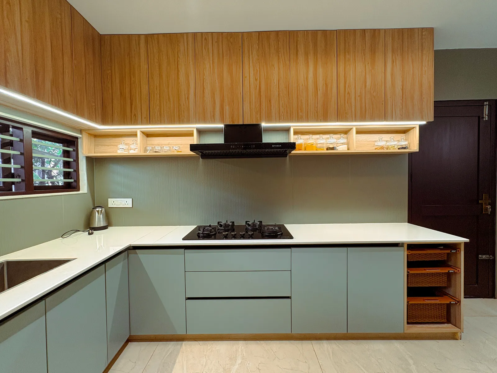
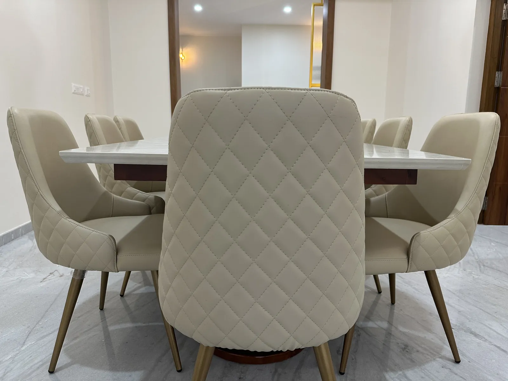
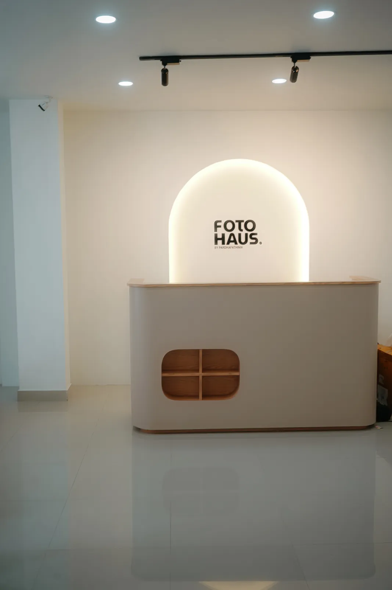
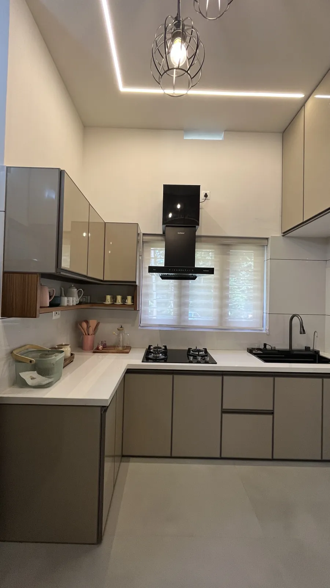

01
See the transformation →

Start a Project



One design vision.
One execution team. One accountable partner.


The character of a space lives in what you touch. We choose few materials, and we choose them well.


Behind every precise space are people who care about the details.


It finally feels like our home.
They didn't just design it. They delivered it.
One team, one answer, every time.